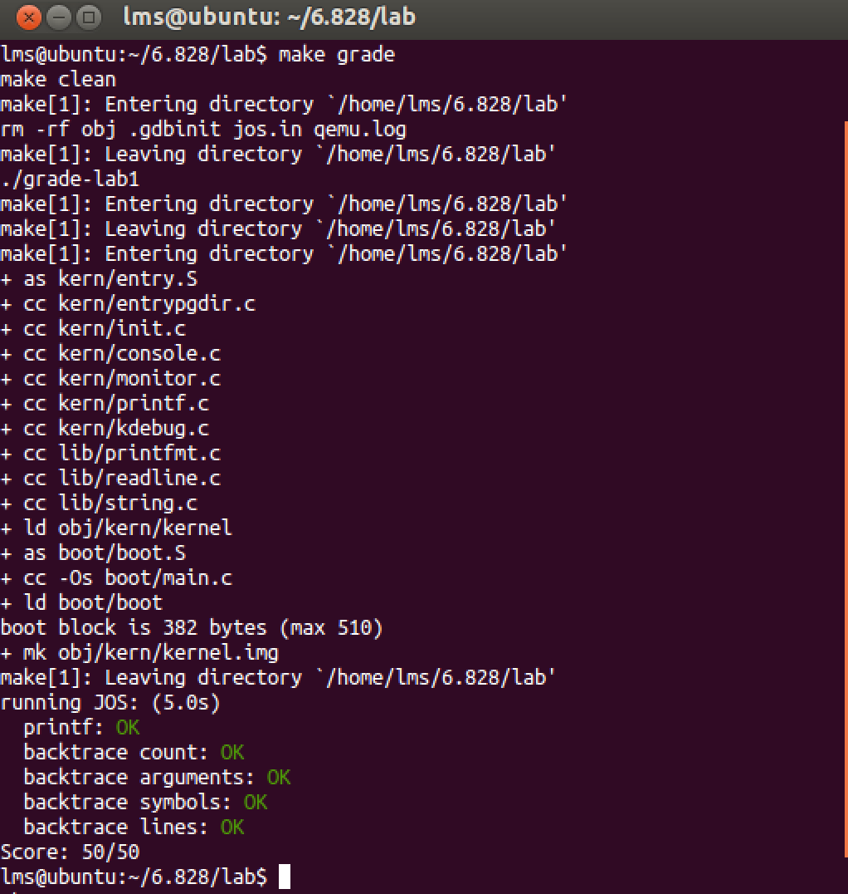

因为学过微机和汇编，所以很多概念还是挺容易理解的。但纸上得来终觉浅，躬行之后还是受益良多的，比如对指针、对esp、ebp的概念理解。当然既然是操作系统课程，对很多操作系统底层的理解也更深入了。
PC Bootstrap
汇编使用的是AT&T标准的，和我们熟悉的Intel的那一套有一点区别，但是看手册理解起来很快（国外好像都喜欢用AT&T这一套的，比如CSAPP就用的是AT&T格式的）。
8086实模式，实际地址CS*16+IP。80286引入保护模式，分段机制。80386采用32位架构，段页式内存管理。为兼容性，RAM分为底部640KB以及0x00100000上面部分，而Lab只使用物理内存前256MB。
ROM BIOS
PC启动后，BIOS被执行，第一条指令CS:f000,IP:fff0,跳转到前面的地址执行指令......(有点蛋疼啊，BIOS第一条指令后，只剩16个字节了，然后跳到前面去了，估计是历史原因= =。) 然后初始化设备和PCI总线后，搜索可以启动的设备如软盘、硬盘、CD-ROM等，开始读取boot loader，赠予控制权，功成身退。
The Boot Loader
软盘和硬盘被分割成了一个个大小为512字节的扇区，扇区也是最小的读写单位。实验是从硬盘加载OS，则硬盘的第一个扇区被称作”boot sector”，boot loader的可执行程序就放在这个扇区里。实验中，当BIOS找到可启动的硬盘后，就将512字节的启动扇区的内容装载到物理内存的0x7c00到0x7dff的位置，然后执行一个jmp指令到CS:IP为0x0000:0x7c00，这个地址其实是任意的，但是已经成为PC默认标准了。
boot.S注释详尽，主要负责real mode到protect mode的跳转，保护模式下才可以使用1MB以上的地址空间，最后会跳转到bootmain。
这部分提到了load address和physical address。加载地址即程序实际被加载到的物理内存地址，例如boot loader被BIOS固定加载到0x7c00，这就是它的物理地址；链接地址是程序自己认为自己所在的地址。
Loading the Kernal
上面提到的bootmain是在main.c中的函数，而main.c用来加载内核可执行程序。boot.S和main.c放在第一个扇区中，内核镜像存放在第二个扇区中。bootmain接管后读取内核并跳入。
bootmain把头读入进来放到0x10000位置，指令数据部分会根据加载信息中的p_pa放置到正确的物理内存地址，最后调用头中存放的内核入口地址，ELFHDR->e_entry，将控制权交给了内核。
内核可执行程序是ELF格式，它是Linux下的可执行文件的格式，ELF可以简单的被认为是由含有加载信息的头和程序部分组成，详细的头情况可以在inc/elf.h中定义的一些Header结构体中看到。程序部分主要由.text、.rodata、.data、.bss等组成。
The Kernal
kernel的入口为kernel/entry.S, 指令被夹在到物理内存的0x100000,而链接地址为0xf0100000。内核执行需要将虚拟地址转换为加载的实际物理地址，这里启用的是分页机制。它将0xf0000000开始的4M空间映射到[0,4M]，以使内核可以工作；将[0,4M]也映射到[0,4M]，即两部分都映射到了同一地址空间中。
Formatted Printing to the Console
终于到了需要码代码的练习题，补充%o。在lib/printfmt.c中可以找到，模仿%d即可完成，比较简单。当然还有改显示的颜色的，在这里略过。
The Stack
从这部分的实验中，我收获比较大。需要理解函数调用中ebp,eip和esp的具体使用情况，感觉CSAPP上讲的比较清楚。
需要对回溯信息的跟进一步的完善，根据提示函数在kern/kdebug.c中，这里面涉及到对stab的理解（因为头文件中有关于stab的文件）。stab表示sybol table，即符号表，.stabstr为符号表中的字符串部分（比如文件名之类），很显然执行汇编代码时它们是没用的，它们的价值是用于调试，显示错误信息。我们可以在inc/stab.h中看到具体的细节，注意到N_SLINE以及stab自身的结构，在函数中的Hint下理解stab_binsearch,模仿上下文的函数即可完成（我这里一开始老师拿不了分，行号总是出错，就是因为上下函数理解不到位，赋值应该用stab中特定的item赋值）。
注意Exercise 12中的提示，包括debuginfo_eip和cprintf的输出格式，应该就能顺利完成这个Lab最后的Exercise了。
整个实验很赞的一点就是提供了评分的脚本，即便是自学，效果同样甚佳。
